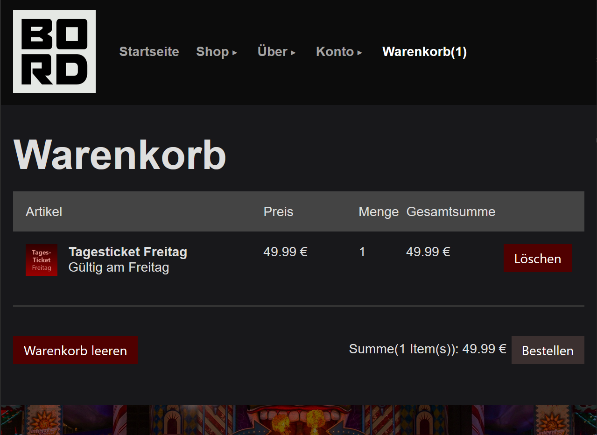
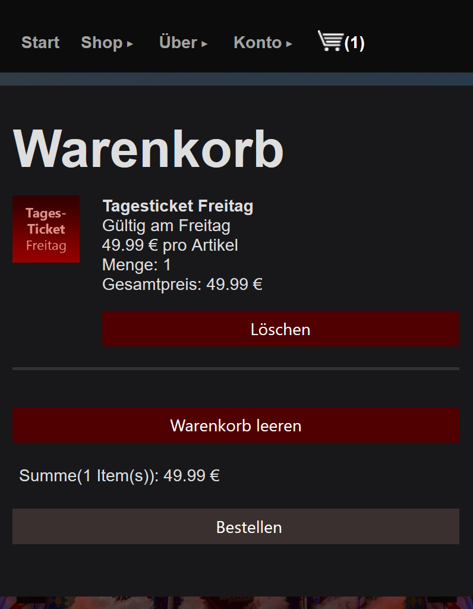

BORD-Festival-Website
Projektdokumentation
| Dokumentverantwortliche: |
Raphael Freybe Daniel Depta |
| Stand der Dokumentation: | 26.02.2020 |
| Bearbeitungsstatus: | abgeschlossen |
Für die Bewertung hervorgehoben:
- komplett responsives Design mit Anpassung in 3 Stufen (Bildschirmbreite bis 600px, bis 950px, ab 950px)
- auf kleinen Displays sieht die Seite teilweise extra anders aus, weil Smartphones eine andere Bedienung erfordern (größere Buttons, nicht viele Elemente nebeneinander), beispielsweise bei:
- Warenkorb, wenn Artikel im Warenkorb liegen
- Startseite, Bannergrafik ändert sich
- Hintergrundgrafik wird auf kleinen Displays nicht mitskaliert, damit sie nicht zu klein wird
- Menüeinträge werden auf kleineren Displays gekürzt, Warenkorb wird durch Warenkorb-Icon ersetzt, Icon im Dropdown-Menü ändert sich beim darüberhovern
- Umsetzung aller Animationen mit CSS, um nicht auf JavaScript zurückgreifen zu müssen
- Verwendung von divs statt HTML-Tabellen (außer in der Dokumentation), um es Screenreadern leichter zu machen
Aufgabenteilung
Raphael Freybe:
dynamische Aufteilung des Shops in zwei Seiten (Merchandise, Tickets)
Design und Backend für Kontakt
Design und Backend für Accountdaten-Änderung
Design und Backend Bestellbestätigung Warenkorb
Newsletter-Eintragung
JavaScript-Validierung für Login und Kontakt
Serverseitige Validierung der Formulare (Login, Registrierung, Kontakt)
Designänderungen CSS
Code-Überarbeitungen
BORD-Schriftzug-Grafiken
Datenbankentwurf
Daniel Depta:
Aufbau des MVCs
Responsive Design, Gestaltung des Layouts
Entwurf der Startseite, CSS-Animationen
Design und Backend für Shop
Filter und Sortierung im Shop
Design und Backend für Warenkorb
Design und Backend für Login/Registrierung (Accounthandling)
Design und Backend für Bestellhistorie
Print-CSS für Account-Bestellhistorie
Grafiken für den Shop, Hintergrundgrafik
JavaScript-Countdown, NoScript-Alternative
JavaScript-Validierung für Registrierung
AJAX: Posten und Laden von Daten für Shop
Aufbau der Dokumentationsseite
Datenbankentwurf
1. Einleitung
Es soll im Rahmen des 3. Semesters an der FH Erfurt eine Website mit PHP-Backend entwickelt werden.Wir wollen eine Festival-Website entwickeln, die folgende Möglichkeiten bietet:
- Tickets (5 Ticketarten) und Merchandise kaufen
- über das Festival und das Line-Up informieren
- Registrierung, Login, Accountverwaltung, Bestellhistorie
- Kunden können mit uns in Kontakt treten/Newsletter
2. Zielbestimmung
2.1 Muss-Kriterien
- Anpassung an verschiedene Displayauflösungen
- Mindestens 6 Hauptseiten:
- Startseite mit Line-Up
- Kontakt
- Login
- Registrierung
- Profil (Accountänderung, Bestellhistorie)
- Anfahrt
- Impressum
- Unterseiten:
- Ticketshop
- Merchandiseshop
- Warenkorb mit Bestell-Zusammenfassung und Lieferadresse
- Validierung von Formulareingaben Client- und serverseitig
- Auch ohne JavaScript Bedienung möglich
- Angenehmer User-Experience mit Animationen/Hover
2.2 Kann-Kriterien
- Bestellung von Artikeln auch ohne eingeloggt zu sein
2.3 Abgrenzungskriterien
- Kein Spielplan für Bühnen, nur allgemeines Line Up
- Keine Festivalverwaltungslogik – kein Ticketkontingent, keine Preisanpassungen
- kein Rollen/Berechtigungskonzept mit Accounts, die mehr können (keine Administrationsaccounts)
3. Produktfunktionen
3.1 Startseite
- Mit JavaScript generierter Countdown zeigt fiktiven Start des Festivals an - ist JavaScript deaktiviert werden die verbleibenden Tage und Stunden gezeigt
- Umrechnung in die Sommerzeit mit bedacht
- Hintergrundbild mit Farbverlauf ins Schwarze für die richtige Einstellung beim ersten Betreten der Seite
- Abonnieren des Newsletters erfolgt per Speicherung der eingetragenen E-Mail in die Datenbank
- E-Mail wird nur gespeichert, wenn eine gültige E-Mail eingegeben wurde (Prüfung per Regex)
- Darstellung des Line-Ups mit Bildern und Bandtitel - Hoveranimationen sorgen für eine bessere User-Experience
3.2 Registrierung
Bei Neuerstellung eines Accounts werden Accountdaten:- E-Mail-Adresse
- Passwort
- Passwortbestätigung
- Vorname
- Nachname
- Geburtsdatum
- Land
- Straße / Hausnummer
- Postleitzahl
- Ort
Es wird überprüft, ob die beiden übermittelten Passwörter übereinstimmen. Wenn dies der Fall ist, wird ein Account angelegt und der Benutzer eingeloggt. Wenn die Passwörter nicht übereinstimmen, wird ein Hinweis ausgegeben und der Benutzer muss es erneut versuchen.
Bei erfolgreicher Registrierung wird das Passwort über die PHP-password_hash-Funktion als bcrypt gehasht und mit einem salt versehen und in der Datenbank gespeichert (Tabelle "clients"). Das Klartextpasswort wird nicht gespeichert.
Die restlichen Accountdaten werden auch in der clients-Tabelle in der Datenbank gespeichert.
Bei den Adressdaten wird überprüft, ob diese Adresse bereits mit allen Parametern in der Tabelle "addresses" vorhanden ist. Ist dies der Fall, wird diese AddressID verwendet.
Falls die Adresse in der Datenbank noch nicht vorhanden ist, wird ein neuer Eintrag in der Tabelle "addresses" erzeugt und die dadurch entstandene AddressID im Account gespeichert.
3.3 Login
Zum Einloggen werden folgende Daten abgefragt:- E-Mail-Adresse
- Passwort
- Die Validierung der Felder erfolgt sowohl clientseitig mit JavaScript als auch serverseitig mit PHP - Fehlermeldungen sehen mit beiden Validierungen gleich aus
Wenn beide Felder mit gültigen Werten gefüllt sind, wird überprüft, ob zu der eingegebenen E-Mail-Adresse ein Account vorhanden ist. Wenn dies nicht der Fall ist, wird ein Hinweis an den Benutzer ausgegeben.
Wenn ein Account vorhanden ist, wird das übermittelte Passwort gehasht und mit dem Hash des Passworts des vorhandenen Accounts verglichen. Wenn diese Hashes übereinstimmen, wird der Benutzer eingeloggt und ein serverseitiges Cookie gesetzt, damit der Benutzer für die Dauer der Session eingeloggt bleibt.
3.4 Account
Nur mit eingeloggtem Benutzer sichtbar.Accountdaten ändern
- Einsicht aller Accountdaten mit der Möglichkeit alle Daten in den entsprechenden Textfeldern zu ändern
- Drücken auf Account ändern führt zu Pop-Up (komplett mit CSS umgesetzt), indem mit der Eingabe des Passworts die Accountdaten-Änderung bestätigt wird
- Wie bei der Registrierung wird das formular zweiseitig mit Php und JavaScript validiert
Bestellhistorie
- Ausgabe der Bestellungen, die der Account bereits getätigt hat
- Bestellungen sind in der Tabelle "purchases" gespeichert
- Auflistung erfolgt in einer Art tabellarischen Form mit Produktinformationen, Gesamtpreis und Bestellungsdatum
- Möglichkeit des Ausdruckens der Bestellhistorie
3.5 Kontakt
- Kontaktformular mit Angabe der Accountdaten, der Nachricht und dem Thema bezüglich der Nachricht
- Validierung: siehe Registrierung
3.6 Ticketshop
Nur eingeloggte Benutzer können Artikel in den Warenkorb legen.- dynamische Ausgabe der in der Tabelle "items" gespeicherten Daten (wo type = 'tickets') als Liste
Ausgabe von:
- Produktbild
- Produktname
- Produktbezeichnung
- Preis
- Anzahl der zu bestellenden Artikelanzahl (vom Benutzer über Buttons und Eingabefeld anpassbar)
Die Artikelanzahl kann für jeden Artikel über einen "-"-Button und über einen "+"-Button angepasst werden, wenn JavaScript aktiviert ist. Wenn JavaScript nicht aktiviert ist, werden diese Buttons nicht angezeigt. Die Eingabe der Artikelanzahl ist unabhängig von JavaScript immer möglich.
Bei einer ungültigen Eingabe wird ein Hinweis ausgegeben.
Über den "Warenkorb"-Button an jedem Artikel kann das Produkt mit der gewünschten Anzahl in den Warenkorb gelegt werden.
Mit aktiviertem JavaScript geschieht dies ohne Seitenneuladen per AJAX. Dabei wird automatisch auch die Gesamtanzahl und der Gesamtpreis des Warenkorbs in der Menüleiste aktualisiert. Wenn ein Fehler aufgetreten ist, wird dieser per AJAX dem Benutzer mitgeteilt.
Wenn JavaScript deaktiviert ist, wird die Bestellung per PHP-Post im Warenkorb gespeichert und der Warenkorb aktualisiert.
3.7 Merchandiseshop
Nur eingeloggte Benutzer können Artikel in den Warenkorb legen.Der Merchandiseshop kann nach folgenden Kriterien gefiltert werden:
- Kategorie
- Geschlecht
- Farbe
Des Weiteren können die Produkte nach Preis und Name auf- und absteigend sortiert werden. Die Sortierrichtung wird an den Sortierbuttons über ein Symbol gekennzeichnet.
- dynamische Ausgabe der in der Tabelle "items" gespeicherten Daten (wo type = 'merchandise') als Liste
Ausgabe von:
- Produktbild
- Produktname
- Produktbezeichnung
- Preis
- Anzahl der zu bestellenden Artikelanzahl (vom Benutzer über Buttons und Eingabefeld anpassbar)
Die Artikelanzahl kann für jeden Artikel über einen "-"-Button und über einen "+"-Button angepasst werden, wenn JavaScript aktiviert ist. Wenn JavaScript nicht aktiviert ist, werden diese Buttons nicht angezeigt. Die Eingabe der Artikelanzahl ist unabhängig von JavaScript immer möglich.
Bei einer ungültigen Eingabe wird ein Hinweis ausgegeben.
Über den "Warenkorb"-Button an jedem Artikel kann das Produkt mit der gewünschten Anzahl in den Warenkorb gelegt werden.
Mit aktiviertem JavaScript geschieht dies ohne Seitenneuladen per AJAX. Dabei wird automatisch auch die Gesamtanzahl und der Gesamtpreis des Warenkorbs in der Menüleiste aktualisiert. Wenn ein Fehler aufgetreten ist, wird dieser per AJAX dem Benutzer mitgeteilt.
Wenn JavaScript deaktiviert ist, wird die Bestellung per PHP-Post im Warenkorb gespeichert und der Warenkorb aktualisiert.
3.8 Warenkorb
Nur mit eingeloggtem Benutzer sichtbar.Auflistung der im Warenkorb gespeicherten Artikel (Tabelle "carts"). Der Warenkorb bleibt auch bei erneutem Login bestehen.
Die Artikel werden in einer Art Tabelle mit folgenden Informationen angezeigt:
- Produktbild
- Produktname
- Produktbezeichnung
- Preis pro Artikel
- Bestellmenge
- Gesamtsumme für den Artikel (Preis * Bestellmenge)
Unter der Tabelle befindet sich ebenfalls eine berechnete Gesamtsumme des Warenkorbs (Gesamtsumme aller Artikel addiert). Daneben befindet sich der Button zum Bestellen des Warenkorbs.
Bei der Bestellung des Warenkorbs wird die gespeicherte Adresse des Benutzers und die Gesamtsumme in einem Popup angezeigt. Wenn der Benutzer die Bestellung bestätigt, werden die dazugehörigen Warenkorb-Einträge in der Datenbank in die "purchases"-Tabelle verschoben.
Da im Warenkorb viele Informationen angezeigt werden müssen, wurde das Layout für Mobilgeräte besonders angepasst.
 Desktopansicht des Warenkorbs

Mobilansicht des Warenkorbs
3.9 Anfahrt
Anfahrt mit Anfahrtsskizze, damit Festivalbesucher uns leicht finden.4. Datenbank

5. Produktumgebung
5.1 Software
- PHP-Version: 7.1.30
- MariaDB-Version: 10.3.15
- Apache-Version: 2.4.39
6. Installationsanleitung
- Bitte kopieren Sie alle Dateien in diesem Verzeichnis in den Ordner Ihres Apache-Servers (htdocs)
- Importieren Sie die festival.sql-Datei aus dem Verzeichnis "\src\database\festival.sql" in Ihre MariaDB/MySQL-Datenbank
- Richten Sie gegebenenfalls in der Datei "\init\10_database.php" Ihre Datenbank-Verbindung ein
- Legen Sie sich auf der Registrierungsseite einen Account an - oder verwenden Sie folgende Test-Login-Daten: E-Mail: test@fh-erfurt.de
Passwort: testpw123
7. Bilderquellen
Line-Up
Disturbed: https://assets.mlk-festivals.com/artist/241/hero_image/large_c7f236c52062052a48b6c600883b0b1e.jpg{kind=link}
Slipknot: https://cdn.antenne.de/thumbs/home/nfs-data/vhosts/cdn/rockantenne-hamburg/uploads/images/galleries/443669/131448_slipknot_alexandria_crahan_conway_wmg.dc769993.jpg
{kind=link}
Rammstein: https://www.tagesspiegel.de/images/tagesspiegel/24340862/2-format43.jpg
{kind=link}
Metallica: https://cdn.antenne.de/thumbs/images/galleries/407413/107406_metallica_2018_Ross_Halfin_230916_04283000_crop.b237ccfa.png
{kind=link}
System of a down: http://www.laut.de/System-Of-A-Down/system-of-a-down-158702.jpg
{kind=link}
Die Toten Hosen: https://cdn.antenne.de/thumbs/images/galleries/447344/133734_dth_gabo_photos.640b5987.png
{kind=link}
Eminem: http://hd-wallpaperstock.blogspot.com/2012/05/hd-eminem-wallpaper_1406.html
Noisia: http://6iee.com/680941.html
Knife Party: https://www.warnermusic.de/knife-party
Pendulum: https://wallpapersden.com/pendulum-band-faces-wallpaper/2560x1440/
Steve Aoki: https://www.bigcitybeats.de/deejays/steve-aoki
Vini Vici: https://www.electriclove.at/line-up/artist-vini-vici-1123
Merchandiseshop
Hoodie: https://de.cleanpng.com/png-7o16rd/Cap: https://de.cleanpng.com/png-5qy49h/
Feuerzeug: https://www.bic-feuerzeuge.de/files/Bilder%20der%20Webseite/Feuerzeugmodelle/J23/BIC_slim_J23_Schwarz.png
{kind=link}
Poster: https://rockamring.eifelvista.com/wp-content/uploads/2014/04/rar-lineup-2014_stand_2103_big.png
{kind=link}
Beanie: https://de.cleanpng.com/png-u497pg/
Flaschenöffner: https://cdn.datadirectory.co.uk/images/500/imp-8517_black.png
{kind=link}
Mütze: https://neubauten.org/sites/default/files/merchandise/enmuetze1.jpg
{kind=link}
T-Shirt Herren: https://www.stickpng.com/assets/images/580b57fbd9996e24bc43bf73.png
{kind=link}
{kind=link}
{kind=link}